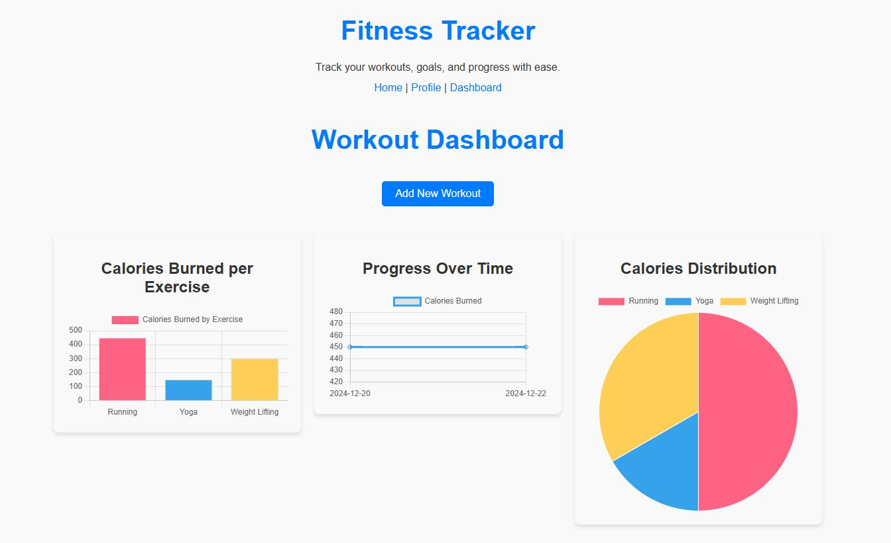

My Projects
Fitness Tracker
This project, Fitness Tracker, is a comprehensive web application designed to help users monitor and achieve their fitness goals. It integrates key features for workout tracking, user management, and visual progress analysis. Here are its highlights:
- User Authentication and Management: Firebase-based authentication for secure user login and registration. Personal user profiles where individuals can edit their details, set goals, and manage calorie targets.
- Workout Tracking: Users can log details of their workouts, including exercise type, duration, calories burned, sets, and reps. Data is stored in a database, allowing users to track and retrieve workout history.
- Dashboard with Data Visualization: Interactive charts (bar, line, and pie) show workout trends, calorie burn distribution, and progress over time. Real-time updates and fetching of workout data maintain a dynamic and personalized experience.
- Private and Public Routes: Public pages like Home and Login accessible to all. Secured private pages (Profile, Dashboard) are available only to authenticated users.
- Backend Support: Express.js server with routes for user and workout management. MongoDB database integration for storing and managing user and workout data.
- Responsive and Modern UI: Clean, mobile-responsive design with intuitive navigation. Interactive forms and real-time feedback improve the user experience.
The Fitness Tracker app is designed to empower users by providing an easy-to-use platform to log their fitness activities, monitor their progress, and stay motivated. By combining robust authentication, data tracking, and engaging visual feedback, it aims to make fitness goals achievable and maintainable.
View Project
Project Title 2
A brief description of Project 2, explaining what it does and its unique aspects.
View Project